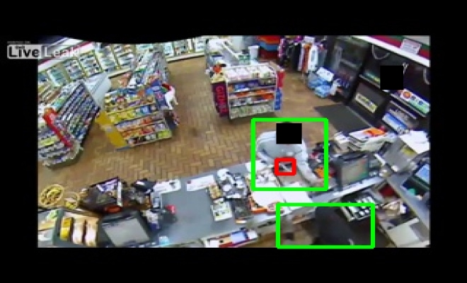

|
I am a PhD student in the Computer Science department at Stony Brook University, advised by Dimitris Samaras My research is focused on Computer vision. Before this, I was a Software Engineer at Bloomberg LP; our team built an ETL pipeline for the ingestion of third party data. In 2020, I obtained my Masters in Computer Science from NYU, where I worked with Kyunghyun Cho's group on Similarity of Neural Networks, and interned at IBM Watson Health. Previously, I obtained a B.Tech in Electrical Engineering from Indian Institute of Technology, Hyderabad, where I worked with Sumohana Channappayya on Image Processing. I interned at Video Analytics Lab, IISc Bangalore. In my free time, I enjoy playing video games. I'm a big fan of strategy games, such as Dota 2 and Age of Empires 2. |
|
|
|
Srikar Yellapragada, Alexandros Graikos, Prateek Prasanna, Tahsin Kurc, Joel Saltz, Dimitris Samaras In Winter Conference on Applications of Computer Vision (WACV), 2024 abstract / bibtex / paper
To achieve high-quality results, diffusion models must be trained on large datasets. This can be notably prohibitive for models in specialized domains, such as computational pathology. Conditioning on labeled data is known to help in data-efficient model training. Therefore, histopathology reports, which are rich in valuable clinical information, are an ideal choice as guidance for a histopathology generative model. In this paper, we introduce PathLDM, the first text-conditioned Latent Diffusion Model tailored for generating high-quality histopathology images. Leveraging the rich contextual information provided by pathology text reports, our approach fuses image and textual data to enhance the generation process. By utilizing GPT's capabilities to distill and summarize complex text reports, we establish an effective conditioning mechanism. Through strategic conditioning and necessary architectural enhancements, we achieved a SoTA FID score of 7.64 for text-to-image generation on the TCGA-BRCA dataset, significantly outperforming the closest text-conditioned competitor with FID 30.1.
title={PathLDM: Text conditioned Latent Diffusion Model for Histopathology}, author={Srikar Yellapragada and Alexandros Graikos and Prateek Prasanna and Tahsin Kurc and Joel Saltz and Dimitris Samaras}, year={2023}, eprint={2309.00748}, archivePrefix={arXiv}, primaryClass={cs.CV} } |

Alexandros Graikos, Srikar Yellapragada, Dimitris Samaras In British Machine Vision Conference (BMVC), 2023 abstract / bibtex / paper / code
Denoising diffusion models have gained popularity as a generative modeling technique for producing high-quality and diverse images. Applying these models to downstream tasks requires conditioning, which can take the form of text, class labels, or other forms of guidance. However, providing conditioning information to these models can be challenging, particularly when annotations are scarce or imprecise. In this paper, we propose adapting pre-trained unconditional diffusion models to new conditions using the learned internal representations of the denoiser network. We demonstrate the effectiveness of our approach on various conditional generation tasks, including attribute-conditioned generation and mask-conditioned generation. Additionally, we show that augmenting the Tiny ImageNet training set with synthetic images generated by our approach improves the classification accuracy of ResNet baselines by up to 8%. Our approach provides a powerful and flexible way to adapt diffusion models to new conditions and generate high-quality augmented data for various conditional generation tasks.
title={Conditional Generation from Unconditional Diffusion Models using Denoiser Representations}, author={Alexandros Graikos and Srikar Yellapragada and Dimitris Samaras}, year={2023}, eprint={2306.01900}, archivePrefix={arXiv}, primaryClass={cs.CV} } |
|

Srikar Yellapragada, Zhenghong Li, Kevin Bhadresh Doshi, Purva Makarand Mhasakar, Heng Fan, Jie Wei, Erik Blasch, Haibin Ling arXiv, 2023 abstract / bibtex / paper / code
Gun violence is a critical security problem, and it is imperative for the computer vision community to develop effective gun detection algorithms for real-world scenarios, particularly in Closed Circuit Television (CCTV) surveillance data. Despite significant progress in visual object detection, detecting guns in real-world CCTV images remains a challenging and under-explored task. Firearms, especially handguns, are typically very small in size, non-salient in appearance, and often severely occluded or indistinguishable from other small objects. Additionally, the lack of principled benchmarks and difficulty collecting relevant datasets further hinder algorithmic development. In this paper, we present a meticulously crafted and annotated benchmark, called \textbf{CCTV-Gun}, which addresses the challenges of detecting handguns in real-world CCTV images. Our contribution is three-fold. Firstly, we carefully select and analyze real-world CCTV images from three datasets, manually annotate handguns and their holders, and assign each image with relevant challenge factors such as blur and occlusion. Secondly, we propose a new cross-dataset evaluation protocol in addition to the standard intra-dataset protocol, which is vital for gun detection in practical settings. Finally, we comprehensively evaluate both classical and state-of-the-art object detection algorithms, providing an in-depth analysis of their generalizing abilities. The benchmark will facilitate further research and development on this topic and ultimately enhance security. Code, annotations, and trained models are available at https://github.com/srikarym/CCTV-Gun
title={CCTV-Gun: Benchmarking Handgun Detection in CCTV Images}, author={Srikar Yellapragada and Zhenghong Li and Kevin Bhadresh Doshi and Purva Makarand Mhasakar and Heng Fan and Jie Wei and Erik Blasch and Haibin Ling}, year={2023}, eprint={2303.10703}, archivePrefix={arXiv}, primaryClass={cs.CV} } |

Manikanta Srikar Yellapragada Masters Thesis, 2020 abstract / bibtex / paper
A recent body of work attempts to understand the behavior and training dynamics of neural
networks by analyzing intermediate representations and designing metrics to define the similarity
between those representations. We observe that the representations of the last layer could be
thought of as the functional output of the model up to that point. In this work, we investigate
if the similarity between these representations can be considered a stand-in for the similarity
of the networks’ output functions. This can have an impact for many downstream tasks, but
we specifically analyze it in the context of transfer learning. Consequently, we perform a series
of experiments to understand the relationship between the representational similarity and the
functional similarity of neural networks. We show in two ways that the leading metric for
representational similarity, CKA, does not bear a strict relationship with functional similarity
author={Yellapragada, Manikanta Srikar}, journal={https://cs.nyu.edu/media/publications/Yellapragada\_\_Manikanta\_Srikar\_-\_MS\_Thesis.pdf}, year={2020}, publisher={New York University} } |
|
Manikanta Srikar Yellapragada, Yiting Xie, Benedikt Graf, David Richmond, Arun Krishnan, Arkadiusz Sitek In International Symposium on Biomedical Imaging (ISBI), 2020 abstract / bibtex / paper
Acute aortic syndrome (AAS) is a group of life threatening conditions of the aorta. We have developed an end-to-end automatic approach to detect AAS in computed tomography (CT) images. Our approach consists of two steps. At first, we extract N cross sections along the segmented aorta centerline for each CT scan. These cross sections are stacked together to form a new volume which is then classified using two different classifiers, a 3D convolutional neural network (3D CNN) and a multiple instance learning (MIL). We trained, validated, and compared two models on 2291 contrast CT volumes. We tested on a set aside cohort of 230 normal and 50 positive CT volumes. Our models detected AAS with an Area under Receiver Operating Characteristic curve (AUC) of 0.965 and 0.985 using 3DCNN and MIL, respectively.
author={Yellapragada, Manikanta Srikar and Xie, Yiting and Graf, Benedikt and Richmond, David and Krishnan, Arun and Sitek, Arkadiusz}, booktitle={2020 IEEE 17th International Symposium on Biomedical Imaging (ISBI)}, pages={1474--1477}, year={2020}, organization={IEEE} } |

Luyao Shi, Deepta Rajan, Shafiq Abedin, Manikanta Srikar Yellapragada, David Beymer, Ehsan Dehghan In Medical Imaging with Deep Learning (MIDL), 2020 abstract / bibtex / paper
Pulmonary Embolism (PE) is a life-threatening disorder associated with high mortality and morbidity. Prompt diagnosis and immediate initiation of therapeutic action is important. We explored a deep learning model to detect PE on volumetric contrast-enhanced chest CT scans using a 2-stage training strategy. First, a residual convolutional neural network (ResNet) was trained using annotated 2D images. In addition to the classification loss, an attention loss was added during training to help the network focus attention on PE. Next, a recurrent network was used to scan sequentially through the features provided by the pre-trained ResNet to detect PE. This combination allows the network to be trained using both a limited and sparse set of pixel-level annotated images and a large number of easily obtainable patient-level image-label pairs. We used 1,670 sparsely annotated studies and more than 10,000 labeled studies in our training. On a test set with 2,160 patient studies, the proposed method achieved an area under the ROC curve (AUC) of 0.812. The proposed framework is also able to provide localized attention maps that indicate possible PE lesions, which could potentially help radiologists accelerate the diagnostic process.
title={Automatic diagnosis of pulmonary embolism using an attention-guided framework: a large-scale study}, author={Shi, Luyao and Rajan, Deepta and Abedin, Shafiq and Yellapragada, Manikanta Srikar and Beymer, David and Dehghan, Ehsan}, booktitle={Medical Imaging with Deep Learning}, pages={743--754}, year={2020}, organization={PMLR} |

Konkimalla Chandra Prakash, Y.M.Srikar , Gayam Trishal, Souraj Mandal, Sumohana S Channappayya In International Conference on Image Processing (ICIP), 2018 abstract / bibtex / paper
Telugu is a Dravidian language spoken by more than 80 million people worldwide. The optical character recognition (OCR) of the Telugu script has wide ranging applications including education, health-care, administration etc. The beautiful Telugu script however is very different from Germanic scripts like English and German. This makes the use of transfer learning of Germanic OCR solutions to Telugu a non-trivial task. To address the challenge of OCR for Telugu, we make three contributions in this work: (i) a database of Telugu characters, (ii) a deep learning based OCR algorithm, and (iii) a client server solution for the online deployment of the algorithm. For the benefit of the Telugu people and the research community, our code has been made freely available at this link.
title={Optical character recognition (ocr) for telugu: Database, algorithm and application}, author={Prakash, Konkimalla Chandra and Srikar, YM and Trishal, Gayam and Mandal, Souraj and Channappayya, Sumohana S}, booktitle={2018 25th IEEE International Conference on Image Processing (ICIP)}, pages={3963--3967}, year={2018}, organization={IEEE} } |
{kind=link}
{kind=link}
{kind=link}
|
|